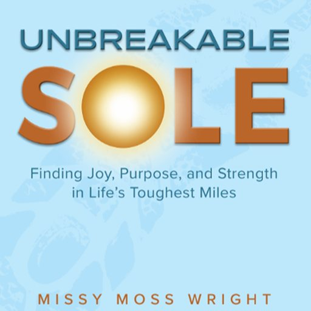

The Unbreakable Sole Audiobook
Some days you don’t need advice. You need somebody who gets it.
Press play on the run, the drive, or the afternoon you can’t seem to get through. Seven hours of company for the miles that are hardest to do on your own.
Start at the start line
Book Intro
Pick up where you stopped
Jump to all 33 chapters
Or listen on
Listen offline
The Full Run
Every chapter, ready to play.
Start at mile one, or jump to the mile you need today. It remembers where you stopped and rolls straight into the next chapter.
Pass It On
Somebody you know is in their hardest mile right now.
You can’t run it for them. But you can give them a hand and a map.
Get Copies To Share →